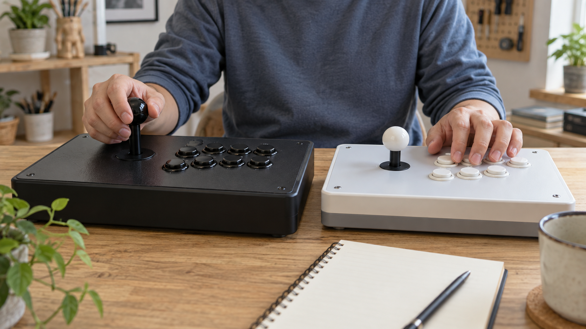
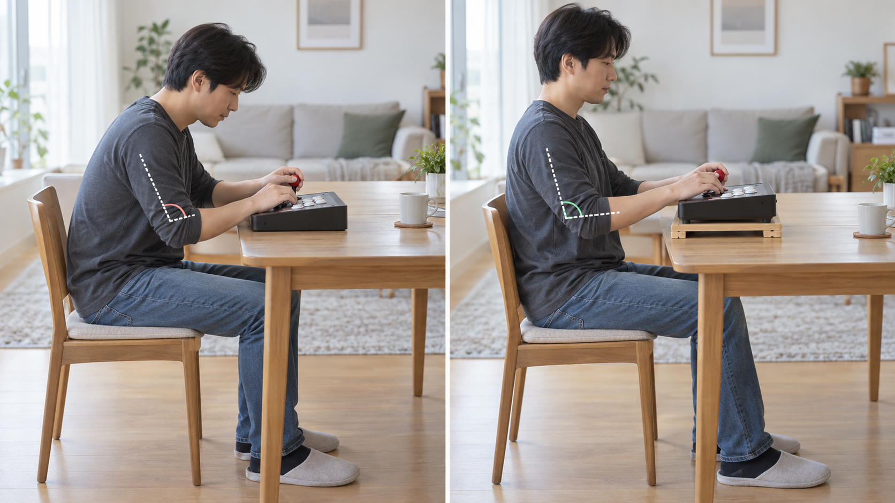

집의 오락기 조작감이 실제 오락실과 다르게 느껴지는 이유는 조이스틱과 버튼의 구성만이 아니라 조작부 높이, 앉거나 서는 자세, 게임별 입력 설정과 사용 상태가 함께 달라질 수 있기 때문입니다. 한 가지 원인으로 단정하지 말고 같은 게임과 같은 동작을 기준으로 차이를 나눠 확인하세요.

조작부 구성은 제품별로 확인하세요
겉모양이 비슷해도 조이스틱의 높이와 움직이는 범위, 버튼 간격과 눌리는 정도는 서로 다르게 느껴질 수 있습니다. 노리박스 제품 목록에는 무선 분리형 조이스틱 세트, 오락기 버튼과 버튼 교체 공구가 각각 별도 상품으로 안내되어 있어 조작부 관련 구성이 한 종류만 있는 것은 아님을 확인할 수 있습니다. 구매 전 기본 점검 순서는 조이스틱과 버튼 확인 방법에서 이어서 볼 수 있습니다.
조작부의 모양이 비슷해도 실제 구성과 손에 닿는 느낌은 제품별로 확인해야 합니다.

높이와 자세가 손의 움직임을 바꿉니다
오락실에서는 서거나 높은 의자에 앉고, 집에서는 식탁이나 낮은 테이블 앞에 앉는 경우가 있습니다. 같은 조작부라도 팔꿈치 각도와 손목 위치, 화면까지의 거리가 달라지면 조작할 때 힘을 쓰는 방식도 다르게 느껴질 수 있습니다. 설치 전에는 실제 사용할 의자와 테이블에서 팔이 편하게 움직이는지 살펴보세요.
조작감은 기기만이 아니라 조작부 높이와 의자, 팔의 자세를 함께 놓고 비교해야 합니다.
같은 게임과 같은 동작으로 비교하세요
서로 다른 게임을 번갈아 실행하면 게임마다 필요한 입력과 반응이 달라 조작부 차이를 구분하기 어렵습니다. 가능하면 같은 게임에서 같은 캐릭터나 장면을 선택하고, 한 방향 이동과 버튼 한 개처럼 단순한 동작부터 비교하세요. 화면 설정이나 연결 환경도 함께 달라졌다면 그 조건을 적어 두는 편이 좋습니다.
같은 게임에서 같은 동작을 반복해야 조작부와 실행 환경의 차이를 구분하기 쉽습니다.
이상 여부와 취향 차이를 구분하세요
가볍거나 묵직하게 느껴지는 차이가 바로 고장을 뜻하지는 않습니다. 입력이 빠지거나 한 방향이 계속 유지되는 등 반복되는 증상이 있으면 제품명, 게임명, 발생 동작을 기록한 뒤 임의로 분해하기 전에 판매자에게 문의하세요. 노리박스는 제품을 소개하기 전 게임을 직접 실행하고 조이스틱과 버튼을 만져보며 불편한 부분을 확인한다고 밝히고 있습니다.
느낌의 차이와 반복되는 입력 이상을 나눠 기록하면 문의할 내용을 더 분명히 전할 수 있습니다.
현재 노리박스 오락실게임기와 관련 제품은 제품자세히보기에서 확인하세요.